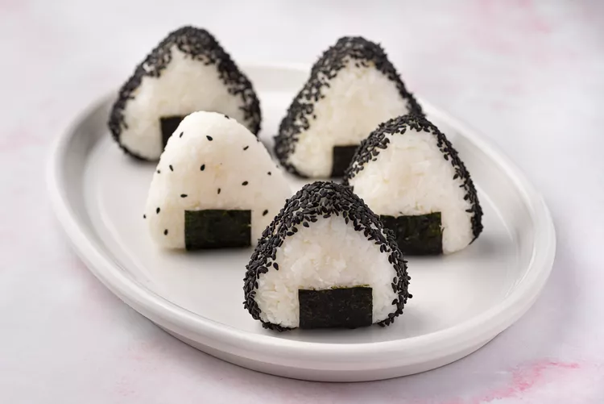

Japanese Rice Balls

Japanese rice balls, also known as onigiri or omusubi, are a staple of Japanese
lunch boxes (bento). They are usually shaped into rounds
or triangles by hand, and they're fun to make and eat.
Much like sandwiches in the West, onigiri is readily available in convenience stores across Japan,
and it's great for a quick and easy savory snack.
They're perfect for an on-the-go eat, too,
with no need for utensils or to heat them up.
Recently, they have enjoyed a surge of popularity
among food trucks where they are made fresh and grilled
lightly to order. However, making onigiri at home is
irresistibly economical and easy.
Ingredients
- 1 to 2 sheets dried nori seaweed, optional
- 4 cups steamed Japanese rice (sushi rice)
- Kosher salt, to taste
- 1 ounce black sesame seeds, optional
For the Fillings:
- 1 umeboshi, optional
- 1 fillet salmon, optional
Steps
- Gather the ingredients
- Cut each nori sheet (if using) into 8 or 9 strips and put about a 1/2 cup of steamed rice in a rice bowl.
- Wet your hands with water so that rice won't stick.
- Rub some salt on your wet hands.
- Place steamed rice in your hand and form into a triangle, making sure it is dense and thick.
- Put your favorite filling, such as umeboshi or grilled salmon, on rice and push the filling into rice lightly.
- Hold rice between palms
- Form rice into a round, a triangle, or a cylinder by pressing lightly with both palms, securing filling in the middle. Roll rice ball in your hands a few times, pressing lightly.
- Wrap rice ball with a strip or two of nori (if using), or sprinkle some sesame seeds on them (if using).